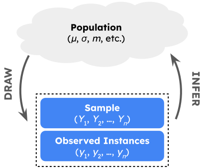
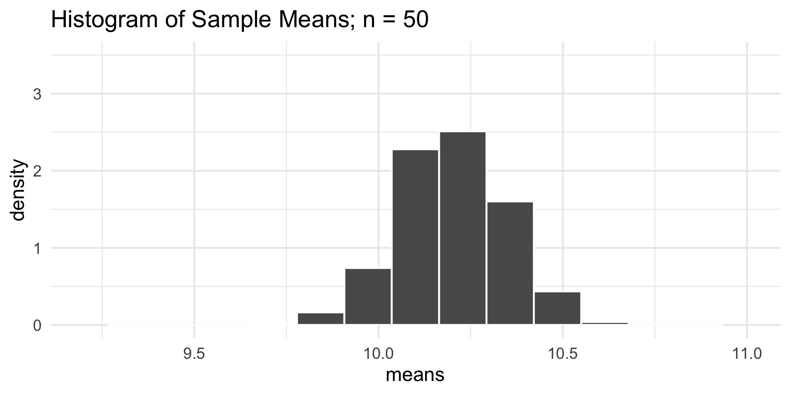
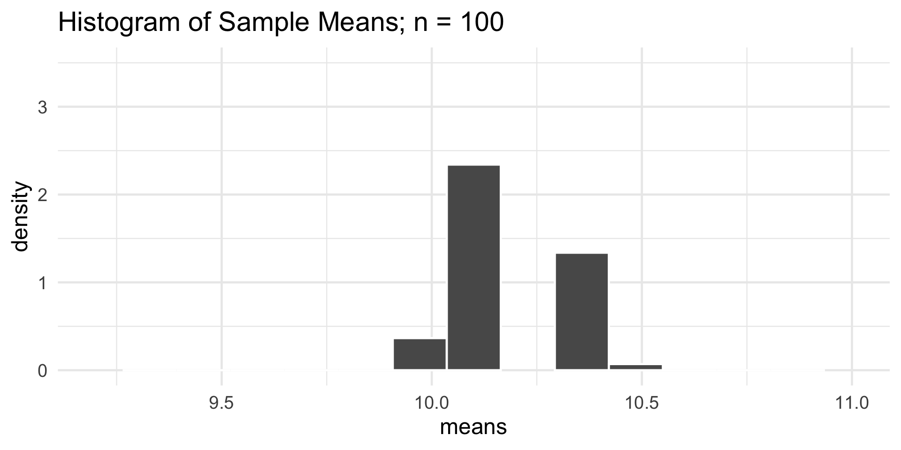
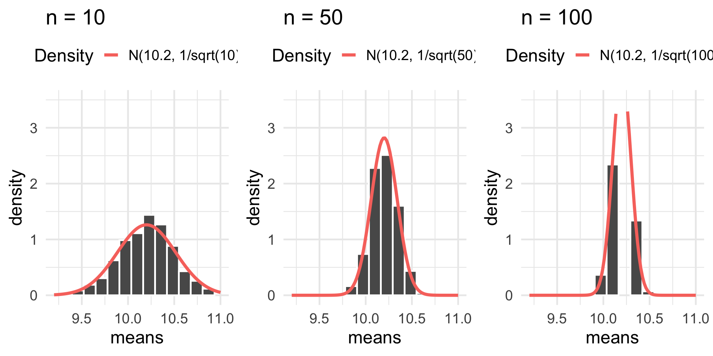
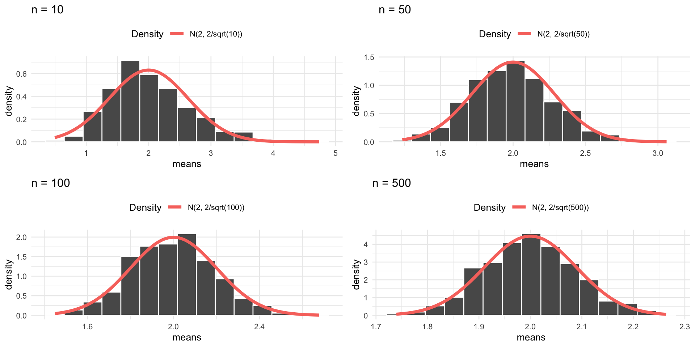

PSTAT 100: Lecture 09
Introduction to Inferential Statistics
Department of Statistics and Applied Probability; UCSB
Summer Session A, 2025
\[ \newcommand{\Prob}{\mathbb{P}} \newcommand\R{\mathbb{R}} \newcommand{\N}{\mathbb{N}} \newcommand{\E}{\mathbb{E}} \newcommand{\Prob}{\mathbb{P}} \newcommand{\F}{\mathcal{F}} \newcommand{\1}{1\!\!1} \newcommand{\comp}[1]{#1^{\complement}} \newcommand{\Var}{\mathrm{Var}} \newcommand{\SD}{\mathrm{SD}} \newcommand{\vect}[1]{\vec{\boldsymbol{#1}}} \newcommand{\Cov}{\mathrm{Cov}} \newcommand{\iid}{\stackrel{\mathrm{i.i.d.}}{\sim}} \]
Leadup
So far, we’ve spent a lot of time describing and analyzing data.
- Semantics vs structure; visualizations; designing studies; collecting data etc.
Indeed, much of what we have done is a part of descriptive statistics which, in a sense, is the branch of statistics devoted to describing data.
Now, yesterday we started talking about how samples are taken from a population.
Assuming appropriate scope of inference, do we have enough statistical tools to use our data to actually say something about the population?
With our current tools: no.
- But, this is where inferential statistics comes into play.
Probability vs. Statistics
An Illustration
- Consider a bucket comprised of blue and gold marbles, and suppose we know how many blue and gold marbles there are.
- From this bucket, we take a sample of marbles.
- We then use our information of the configuration of marbles in the bucket to inform us about what’s in our hand.
- E.g. what’s the expected number of gold marbles in our hand?
- E.g. what’s the probability that we have more than 3 blue marbles in our hand?
Probability vs. Statistics
An Illustration
- Consider now the opposite scenario: we do not know anything about the configuration of marbles in the bucket. All we have is a sample of, say, 11 blue and 6 gold marbles drawn from this bucket.
- We then use our information on the configuration of marbles in our hand to inform us about what’s in the bucket.
- E.g. what’s the expected number of gold marbles in the bucket?
- E.g. what’s the probability that there are more than 3 blue marbles in the bucket?
Statistical Inference
General Framework
- Now, instead of marbles in a bucket, imagine units in our sampled population.
We have a population, governed by a set of population parameters that are unobserved (but that we’d like to make claims about).
To make claims about the population parameters, we take a sample.
We then use our sample to make inferences (i.e. claims) about the population parameters.

Example: Cats
As an example, suppose we wish to determine the true average weight of all cats in the world. Call this quantity µ.
Clearly, a census is impossible here; we cannot weigh every single cat in the world and average their weights.
Instead, we can take repeated samples (say, SRSes) of n cats and use these samples to say something about µ.
Let’s establish some notation.
- Define Yi to be the weight of a randomly-selected cat. This is random.
- Define yi to be the weight of a specific cat (e.g. Kitty). This is deterministic.
Cats!

Cats!

Cats!

Cats!

Cats!
A random sample of cat weights is then a collection \(\{Y_1, \cdots, Y_n\}\) of random variables (in this case, random cat weights).
- A particular realization of a sample is then \(\{y_1, \cdots, y_n\}\).
Doesn’t it seem tempting to use the average weight of our sampled cats to say something about the average weight of all cats (µ)?
Indeed, we can define the sample mean to be \[ \overline{Y}_n := \frac{1}{n} \sum_{i=1}^{n} Y_i \] a quantity you should hopefully recognize from PSTAT 120A!
Statistics and Estimators
- We define a statistic to be a function of our random sample \((Y_1, \cdots, Y_n)\).
- Example: sample mean: \(\overline{Y}_n := \frac{1}{n} \sum_{i=1}^{n} Y_i\)
- Example: sample variance: \(S_n^2 := \frac{1}{n - 1} \sum_{i=1}^{n} (Y_i - \overline{Y}_n)^2\)
- Example: sample maximum: \(Y_{(n)} := \max\{Y_1, \cdots, Y_n\}\)
- By definition, statistics are random variables.
- For example, different samples of cat weights will have potentially different observed averages, variances, and maxima.
- The distribution of a statistic is called its sampling distribution
- A statistic used in service of estimating a population parameter is called an estimator, and the value of an estimator corresponding to a particualar realized sample is called an estimate
Statistics and Estimators
Example
Example
A vet wishes to estimate the true weight of all cats in the world. She takes a sample of 10 cats, and finds their average weight to be 9.12 lbs.
The population parameter is the true average weight of all cats in the world (which we can call µ).
The estimator is the sample mean: we are using sample means to estimate µ.
The estimate in this scenario is 9.12 lbs, as this is a particular realization of our estimator.
Sampling Distributions
As we will soon see, it’s often very useful to derive the sampling distribution of a particular statistic.
There are two main ways to derive sampling distributions: using a simulation-based approach, and using a theoretical approach. Let’s start off with a simulation-based approach.
To make things more concrete, suppose \(Y_1, \cdots, Y_n \iid \mathcal{N}(\mu, 1)\).
- If it’s helpful, you can again think of Yi as the weight of a randomly-selected cat; now, we’re saying that this random variable follows a normal distribution with mean µ and variance 1, and that cat weights are independent across cats.
Goal
Determine the sampling distribution of \(\overline{Y}_n := n^{-1} \sum_{i=1}^{n} Y_i\).
Sampling Distributions
Normal Example
- Recall that the whole notion of a sampling distribution arises because our statistics (in this case, the sample mean) are random.
- Different samples of cats will yield different observed sample mean weights
- In essence, the sampling distribution seeks to capture the randomness or variability present in a statistic.
- With computer technology, we can try to capture this variability empirically:
- Simulate taking a sample of n cats, and record the average weight
- Repeat this a very large number of times, and examine the distribution of the sample means.
- This distribution should, in theory, give us a good sense of the sampling distribution of the sample mean!
Sampling Distributions
Normal Example
The first question is: how do we simulate taking a sample of cats?
Because we are assuming the weight of a randomly-selected cat follows a normal distribution, we can use
R’s built-inrnorm()function.For example, to draw a sample of size 10 from a \(\mathcal{N}(10.2, 1)\) distribution, we would run
- Again, in the context of our cat-weight example, these values represent a hypothetical collection of the weights of 10 different cats.
Sampling Distributions
Normal Example
Sampling Distributions
Normal Example
Sampling Distributions
Normal Example
Sampling Distributions
Normal Example
- Some interesting takeaways:
- Regardless of the sample size, the sampling distribution of \(\overline{Y}_n\) appears to be roughly normal.
- Regardless of the sample size, the sampling distribution of \(\overline{Y}_n\) appears to centered at the population mean (10.2).
- As the sample size increases, the sampling distribution of \(\overline{Y}_n\) becomes more tightly concentrated about the population mean (10.2)
- Guess what- this shouldn’t be a surprise!
Sampling Distributions
Sample Mean: Normal Population
Sample Mean of Normally-Distributed Random Variables
If \(Y_1, \cdots, Y_n \iid \mathcal{N}(\mu, \sigma^2)\), then \[ \overline{Y}_n := \left( \frac{1}{n} \sum_{i=1}^{n} Y_i \right) \sim \mathcal{N}\left( \mu, \ \frac{\sigma^2}{n} \right) \]
This is a result you saw in PSTAT 120A, and proved using Moment-Generating Functions.
In the context of sampling, here’s what this says: if we assume a normally-distributed population, then the sampling distribution of the sample mean is also normal.
Sampling Distributions
Sample Mean: Normal Population
Sampling Distributions
Sample Variance: Normal Population
Now, note (again) that our sampling distribution of the sample mean is centered at the true value of the population mean (which, in the simulation, is 10.2).
Indeed:
\[ \mathbb{E}[\overline{Y}_n] = \mathbb{E}\left[ \frac{1}{n} \sum_{i=1}^{n} Y_i \right] = \frac{1}{n} \sum_{i=1}^{n} \E[Y_i] = \frac{1}{n} \sum_{i=1}^{n} (\mu) = \frac{1}{n} \cdot n \mu = \mu \]
- So, the expected value of the sample mean \(\overline{Y}_n\) is the population mean µ: on average, the sample mean will guess the true population mean bang-on.
Bias
We define the bias (sometimes called the statistical bias, to distinguish from the forms of bias we talked about yesterday) of an estimator to be the difference between the expected value of the estimator and the parameter it’s trying to estimate: \[ \mathrm{Bias}(\widehat{\theta}_n, \theta) := \E[\widehat{\theta}_n] - \theta \]
For example, based on what we did on the previous slide, \[ \mathrm{Bias}(\overline{Y}_n , \mu) = \E[\overline{Y}_n] - \mu = \mu - \mu = 0 \]
- An estimator whose bias is equal to zero is said to be unbiased.
- For example, the sample mean is an unbiased estimator for the population mean.
Bias
- Here are three parameters that arise frequently throughout statistics, and a corresponding unbiased estimator for each:
| Parameter Name |
Parameter Symbol | Common Estimator |
|---|---|---|
| Mean | µ | Sample Mean: \(\overline{Y}_n := (1/n) \sum_{i=1}^{n} Y_i\) |
| Variance | σ2 | Sample Variance: \(S_n^2 := (n-1)^{-1} \sum_{i=1}^{n} (Y_i - \overline{Y}_n)^2\) |
| Proportion | p | Sample Proportion: \(\widehat{P}_n := \mathrm{prop}(\mathrm{success})\) |
Proportions as Means
By the way, like we talked about in lecture yesterday, proportions are actually just a special case of means: specifically, a proportion is just a mean of binary 0/1 values.
As an example, imagine tossing a coin:
Your Turn!
Your Turn!
At Stellardollar Coffee, the time X (in minutes) a randomly-selected person spends waiting in line follows a distribution with density function given by \[ f_X(x) = \begin{cases} \frac{1}{\beta} e^{-x/\beta} & \text{if } x \geq 0 \\ 0 & \text{otherwise} \\ \end{cases} \]
In terms of β, what is the population average wait time? (I.e., what is \(\E[X]\)?)
If X represents the (random) wait time of a randomly-selected customer from Stellardollar Coffee, is X2 an unbiased estimator for the true average wait time of customers?
If X and Y represent the (random) wait times of two randomly-selected customers, is the average wait time (X + Y)/2 an unbiased estimator for the true average wait time of customers?
05:00
Simulations
Let’s consider again part (c) of the previous “Your Turn” exercise.
Specifically, let’s see if we can implement a simulation-based approach to answering it.
Here’s the idea:
- Simulate the two wait times X and Y
- Compute their average
- Repeat steps 1 and 2 a large number of times, and compute the sample average of these values
It seems that this final sample average should be close to the true theoretical expectation.
- Indeed, this is a simple example of a Monte Carlo Simulation
Simulations
set.seed(100) ## for reproducibility
true_beta <- 2 ## for the purposes of simulation
B <- 1000 ## the number of times to run the simulation
samp_means <- c() ## initialize a blank vector to store the sample means
for(b in 1:B) {
X <- rexp(1, rate = 1/2) ## simulate the first wait time
Y <- rexp(1, rate = 1/2) ## simulate the second wait time
samp_means <- c(samp_means, mean(c(X, Y)))
}- Here’s our approximation to \(\mathbb{E}[(X + Y)/2]\):
Sampling Distributions
Sample Mean: Non-Normal Population
Finally, we close out by exploring the sampling distribution of the sample mean, assuming a non-normal population.
Here is the general algorithm we’ll use:
- Simulate a draw of size n (for different values of n) from the Exp(2) distribution
- Compute the mean of these simulated values
- Repeat a large number (1000) times, and examine the histogram of resulting sample mean values.
This histogram should give us a general idea of what the sampling distribution of \(\overline{Y}_n\) when \(Y_1, \cdots, Y_n\) are i.i.d. Exp(2) random variables.
Sampling Distributions
Sample Mean: Non-Normal Population
Sampling Distributions
Sample Mean: Non-Normal Population
As the sample size increases, the sampling distribution of \(\overline{Y}_n\) starts to look more and more like a normal distribution…
Again - this is actually old news!
Central Limit Theorem
Given an i.i.d. sample (Y1, …, Yn) from a distribution with finite mean µ and finite variance σ2, \[ \frac{\sqrt{n}(\overline{Y}_n - \mu)}{\sigma} \stackrel{\cdot}{\sim} \mathcal{N}(0, 1) \quad \iff \quad \overline{Y}_n \stackrel{\cdot}{\sim} \mathcal{N}\left(\mu, \ \frac{\sigma^2}{n} \right) \]
- Here, \(\stackrel{\cdot}{\sim}\) can be read as “approximately distributed as”
Sampling Distributions
Sample Mean: Non-Normal Population
Collective Exercise
Let’s Work On This Together!
The amount of time a randomly-selected Santa Barbara MTD bus is delayed is a random variable with mean 4 minutes and standard deviation 3 minutes.
What is the probability that a randomly-selected bus is early? (Hint: think about what this means in the context of the problem.)
A collection of 81 independent buses is taken, and the average (mean) amount of delay is recorded. What is the probability that the average amount of delay among these 81 buses lies between 3 minutes and 5 minutes?
Next Time
Tomorrow, we’ll continue our discussion of estimation.
- We’ll further explore the notion of statistical bias
- We’ll also introduce confidence intervals, which arise very frequently in statistics.
In lab today, you’ll get some practice with the sampling techniques we discussed yesterday (and explore the effects of bias), along with some practice with sampling distributions.
Please do not forget that the Mid-Quarter Project is due THIS SUNDAY (July 13, 2025) by 11:59pm, on Gradescope.
- Only one of your group members needs to submit; on Gradescope, there will be a way for them to include all group member’s names.

PSTAT 100 - Data Science: Concepts and Analysis, Summer 2025 with Ethan P. Marzban